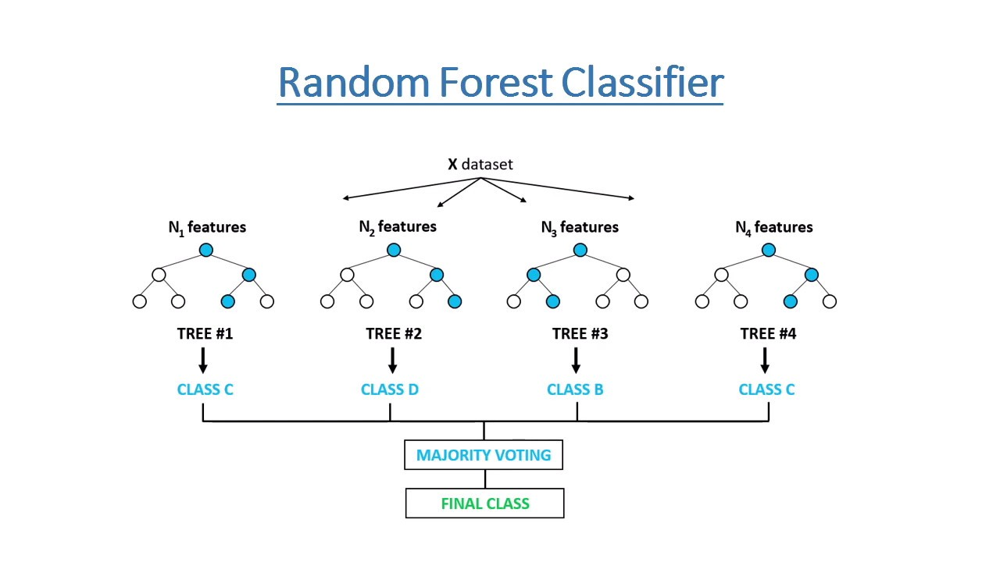

sh <- suppressPackageStartupMessages
sh(library(tidyverse))
sh(library(caret))
sh(library(tidytext))
sh(library(SnowballC))
sh(library(rpart)) # New?
sh(library(randomForest)) # New?
data(stop_words)
sh(library(thematic))
theme_set(theme_dark())
thematic_rmd(bg = "#111", fg = "#eee", accent = "#eee")Decision Trees
Applied Machine Learning
Jameson > Hendrik > Calvin
Agenda
- Course Announcements
- Decision-trees
- Random forests
- Group work
GitHub Change
Optional -> Mandatory
- I am “promoting” GitHub usage to mandatory for the:
- Model
- Midterm
- Final
- You will need it for DATA 510 at high probability
- It is useful now.
- Alternative is Canvas…
Midterm 3/17
Brief recap of course so far
- Linear regression (e.g.
lprice ~ .), assumptions of model, interpretation. - \(K\)-NN (e.g.,
province ~ .), multi-class supervised classification. Hyperparameter \(k\). - Naive Bayes (e.g.,
province ~ .), multi-class supervised classification. - Logistic regression (e.g.,
province=="Oregon" ~ .), binary supervised classification. Elastic net. - Feature engineering (logarithms, center/scaling, Box Cox, tidytext, etc.).
- Feature selection (correlation, linear / logistic coefficients, frequent words, frequent words by class, etc.).
Practice
- Practice Midterm live, on course webpage.
- Exam, .qmd, Solutions, and Rubric.
- We will work through it in our model groups 3/10.
- It is based on the 5 homeworks.
- It is based on the prior slide.
- Little to no computatational linguistics
Modality Update
- I will release the midterm exam Monday at 6 PM PT
- 3/17
- I will expect all students to complete by Friday at 10 PM PT
- 3/21
- It will be digital release via GitHub Classroom
- You will have 4 hours after starting the assignment to complete it, via submitting upload.
- We will conduct the practice midterm over GitHub Classroom.
First Model Due 3/10
Publish
- Each group should create:
- An annotated
.*mdfile, and - The .rds/.pickle/.parquet file that it generates, that
- Contains only the features you want in the model.
- Under version control, on GitHub.
Constraints
- I will run:
- The specified \(K\)NN or Naive Bayes model,
- With:
province ~ .(or the whole data frame inscikit) - With repeated 5-fold cross validation
- With the same index for partitioning training and test sets for every group.
- On whatever is turned in before class.
- Bragging rights for highest Kappa
Context
- The “final exam” is that during the last class you will present your model results as though you are speaking to the managers of a large winery.
- I may change the target audience a bit stay tuned.
- It should be presented from a Quarto presentation on GitHub.
- You must present via the in-room “teaching machine” computer, not your own physical device, to ensure that you are comfortable distributing your findings.
Group Meetings
- You should have a group assignment
- Meet in your groups!
- Talk about your homework with your group.
Decision trees
Meme
This flow chart is also canonical
(sincere apologies but I do not think I can alt-text this)
[image or embed] — lastpositivist.bsky.social (@lastpositivist.bsky.social) November 10, 2024 at 11:45 PM
Libraries Setup
Dataframe
Wine Words
wine_words <- function(df, j, stem){
words <- df %>%
unnest_tokens(word, description) %>%
anti_join(stop_words) %>%
filter(!(word %in% c("wine","pinot","vineyard")))
if(stem){
words <- words %>% mutate(word = wordStem(word))
}
words %>% count(id, word) %>% group_by(id) %>% mutate(exists = (n>0)) %>%
ungroup %>% group_by(word) %>% mutate(total = sum(n)) %>% filter(total > j) %>%
pivot_wider(id_cols = id, names_from = word, values_from = exists, values_fill = list(exists=0)) %>%
right_join(select(df,id,province)) %>% select(-id) %>% mutate(across(-province, ~replace_na(.x, F)))
}Make Wino
wino <- wine_words(wine, 2000, F) %>%
filter(province %in% c("Oregon","California")) %>%
arrange(province)
wino# A tibble: 6,696 × 8
fruit flavors tannins palate black cherry red province
<lgl> <lgl> <lgl> <lgl> <lgl> <lgl> <lgl> <chr>
1 FALSE FALSE FALSE TRUE FALSE FALSE FALSE California
2 FALSE TRUE FALSE FALSE TRUE TRUE FALSE California
3 TRUE FALSE FALSE FALSE FALSE FALSE TRUE California
4 FALSE TRUE FALSE FALSE FALSE TRUE FALSE California
5 FALSE FALSE FALSE FALSE FALSE TRUE TRUE California
6 FALSE FALSE FALSE FALSE FALSE TRUE TRUE California
7 TRUE TRUE FALSE TRUE FALSE FALSE FALSE California
8 TRUE FALSE FALSE TRUE FALSE FALSE FALSE California
9 FALSE FALSE FALSE TRUE TRUE TRUE TRUE California
10 FALSE TRUE FALSE TRUE FALSE FALSE FALSE California
# ℹ 6,686 more rowsAlgorithm
- Select the best attribute -> \(A\)
- Assign \(A\) as the decision attribute (test case) for the
NODE. - For each value of \(a \in A\), create a new descendant of the
NODE. - Sort the training examples to the appropriate descendant node leaf.
- If examples are perfectly classified, then
STOPelse iterate over the new leaf nodes.
Aside:
- Do we know what nodes and edges are in graph theory?
- Slides
Visualize

In practice
- Where are going on vacation?
- If top 25 city in US, say city.
- Chicago
- If US but not top 25 city, say state.
- Utah
- If not US, say nation-state.
- Colombia
- If top 25 city in US, say city.
Information Gain
- The information content of a piece of information is how “surprising” it is.
- In sports, perhaps, wins above replacement.
- In grades, perhaps, standard deviations above the mean
- In weather, perhaps, date of a rainstorm in desert vs in rainforest.
Example
- I tell you 123456 is not going to win the lottery
- Very little information, and very unsurprising.
- If I tell you 123456 will win the lottery
- Very high information, very surprising.
Formula
\[ I(p) = \log \left(\frac{1}{p}\right) \]
- If \(p = 1\), information is \(0\)
- As \(p\) becomes small, \(I(p)\) grows.
Datasets
- The entropy of a dataset is its “average information content”:
\[ {\rm Entropy}=\sum_{i=1}(p_i)\log\left(\frac{1}{p_i}\right) = \sum - p_i\log(p_i) \]
- \(p\) is the proportion of the class under consideration.
- If we have only one category, then \(p_i = 1\) and entropy is 0 (no “disorder”).
Samples
- It rains 36 days per year in Phoenix.
- There are exactly 360 days per year src
- The “parent” node decides if a day rains, or not, and sends to other decision makers.
- \(p_0 = .9\): No rain.
- \(p_1 = .1\): Yes rain.
Entropy Calculation
\[ \begin{align} {\rm Entropy} &= \sum - p_i\log(p_i) \\ &= -.9 * \log(.9) -.1 * \log(.1) \end{align} \]
Portland
- In Portland it rains 153-164 days a year.
- That is exactly half of 365
- (Don’t check)
Entropy Calculation
\[ \begin{align} {\rm Entropy} &= \sum - p_i\log(p_i) \\ &= -.5 * \log(.5) -.5 * \log(.5) \\ &= -\log(.5) \end{align} \]
Surpised?
- It is more suprising to correctly guess half of days than correctly guess one tenth of days.
Optimize
- A decision tree looks to determine the optimal binary split
- Said split maximizes information gain:
- The entropy of the parent, less
- The entropy of the child nodes
- Averaged
- Say probability of snow given precipitation
Exercise
- Say we wish to classify wines by province.
- We could first see if they are fruity
- “fruit” \(\in\)
desc
- “fruit” \(\in\)
- We could first see if they are tannic.
- “tanni” \(\in\)
desc
- “tanni” \(\in\)
- We could first see if they are fruity
- Which is better?
Split the data
Fit a basic model
ctrl <- trainControl(method = "cv")
fit <- train(province ~ .,
data = train,
method = "rpart",
trControl = ctrl,
metric = "Kappa")
fit$finalModeln= 5358
node), split, n, loss, yval, (yprob)
* denotes terminal node
1) root 5358 2190 California (0.5912654 0.4087346)
2) palateTRUE>=0.5 1466 212 California (0.8553888 0.1446112) *
3) palateTRUE< 0.5 3892 1914 Oregon (0.4917780 0.5082220)
6) fruitTRUE< 0.5 2021 711 California (0.6481940 0.3518060) *
7) fruitTRUE>=0.5 1871 604 Oregon (0.3228220 0.6771780)
14) redTRUE>=0.5 285 109 California (0.6175439 0.3824561) *
15) redTRUE< 0.5 1586 428 Oregon (0.2698613 0.7301387) *Confusion Matrix
Confusion Matrix and Statistics
Reference
Prediction California Oregon
California 684 257
Oregon 107 290
Accuracy : 0.728
95% CI : (0.7033, 0.7516)
No Information Rate : 0.5912
P-Value [Acc > NIR] : < 2.2e-16
Kappa : 0.4123
Mcnemar's Test P-Value : 5.731e-15
Sensitivity : 0.8647
Specificity : 0.5302
Pos Pred Value : 0.7269
Neg Pred Value : 0.7305
Prevalence : 0.5912
Detection Rate : 0.5112
Detection Prevalence : 0.7033
Balanced Accuracy : 0.6974
'Positive' Class : California
Let’s tune
- By setting a tune control we can try more trees.
fit <- train(province ~ .,
data = train,
method = "rpart",
trControl = ctrl,
tuneLength = 15,
metric = "Kappa")
fit$finalModeln= 5358
node), split, n, loss, yval, (yprob)
* denotes terminal node
1) root 5358 2190 California (0.59126540 0.40873460)
2) palateTRUE>=0.5 1475 202 California (0.86305085 0.13694915)
4) blackTRUE>=0.5 512 28 California (0.94531250 0.05468750) *
5) blackTRUE< 0.5 963 174 California (0.81931464 0.18068536)
10) fruitTRUE< 0.5 618 81 California (0.86893204 0.13106796) *
11) fruitTRUE>=0.5 345 93 California (0.73043478 0.26956522)
22) redTRUE>=0.5 117 9 California (0.92307692 0.07692308) *
23) redTRUE< 0.5 228 84 California (0.63157895 0.36842105)
46) cherryTRUE< 0.5 146 50 California (0.65753425 0.34246575)
92) flavorsTRUE< 0.5 101 30 California (0.70297030 0.29702970) *
93) flavorsTRUE>=0.5 45 20 California (0.55555556 0.44444444)
186) tanninsTRUE< 0.5 38 16 California (0.57894737 0.42105263) *
187) tanninsTRUE>=0.5 7 3 Oregon (0.42857143 0.57142857) *
47) cherryTRUE>=0.5 82 34 California (0.58536585 0.41463415) *
3) palateTRUE< 0.5 3883 1895 Oregon (0.48802472 0.51197528)
6) fruitTRUE< 0.5 2016 707 California (0.64930556 0.35069444)
12) cherryTRUE>=0.5 912 225 California (0.75328947 0.24671053) *
13) cherryTRUE< 0.5 1104 482 California (0.56340580 0.43659420)
26) blackTRUE>=0.5 185 33 California (0.82162162 0.17837838) *
27) blackTRUE< 0.5 919 449 California (0.51142546 0.48857454)
54) flavorsTRUE< 0.5 588 247 California (0.57993197 0.42006803)
108) redTRUE< 0.5 495 189 California (0.61818182 0.38181818)
216) tanninsTRUE< 0.5 426 153 California (0.64084507 0.35915493) *
217) tanninsTRUE>=0.5 69 33 Oregon (0.47826087 0.52173913) *
109) redTRUE>=0.5 93 35 Oregon (0.37634409 0.62365591) *
55) flavorsTRUE>=0.5 331 129 Oregon (0.38972810 0.61027190) *
7) fruitTRUE>=0.5 1867 586 Oregon (0.31387252 0.68612748)
14) redTRUE>=0.5 280 114 California (0.59285714 0.40714286)
28) cherryTRUE>=0.5 101 26 California (0.74257426 0.25742574) *
29) cherryTRUE< 0.5 179 88 California (0.50837989 0.49162011)
58) blackTRUE>=0.5 21 4 California (0.80952381 0.19047619) *
59) blackTRUE< 0.5 158 74 Oregon (0.46835443 0.53164557) *
15) redTRUE< 0.5 1587 420 Oregon (0.26465028 0.73534972)
30) blackTRUE>=0.5 312 144 Oregon (0.46153846 0.53846154)
60) cherryTRUE< 0.5 85 19 California (0.77647059 0.22352941) *
61) cherryTRUE>=0.5 227 78 Oregon (0.34361233 0.65638767)
122) flavorsTRUE>=0.5 82 33 Oregon (0.40243902 0.59756098)
244) tanninsTRUE>=0.5 20 9 California (0.55000000 0.45000000) *
245) tanninsTRUE< 0.5 62 22 Oregon (0.35483871 0.64516129) *
123) flavorsTRUE< 0.5 145 45 Oregon (0.31034483 0.68965517) *
31) blackTRUE< 0.5 1275 276 Oregon (0.21647059 0.78352941) *Confusion Matrix
Confusion Matrix and Statistics
Reference
Prediction California Oregon
California 633 176
Oregon 158 371
Accuracy : 0.7504
95% CI : (0.7263, 0.7734)
No Information Rate : 0.5912
P-Value [Acc > NIR] : <2e-16
Kappa : 0.4809
Mcnemar's Test P-Value : 0.3523
Sensitivity : 0.8003
Specificity : 0.6782
Pos Pred Value : 0.7824
Neg Pred Value : 0.7013
Prevalence : 0.5912
Detection Rate : 0.4731
Detection Prevalence : 0.6046
Balanced Accuracy : 0.7392
'Positive' Class : California
Results
- Kappa 0.3538 -> 0.4668
- Mostly by finding more Oregon wines.
Variable Importance
- Permutation importance
- Average split quality
Potential Overfitting
Should we prune on…
- Depth?
- Class size?
- Complexity?
- Minimum Information Gain?
Confusion Matrix
Confusion Matrix and Statistics
Reference
Prediction California Oregon
California 633 176
Oregon 158 371
Accuracy : 0.7504
95% CI : (0.7263, 0.7734)
No Information Rate : 0.5912
P-Value [Acc > NIR] : <2e-16
Kappa : 0.4809
Mcnemar's Test P-Value : 0.3523
Sensitivity : 0.8003
Specificity : 0.6782
Pos Pred Value : 0.7824
Neg Pred Value : 0.7013
Prevalence : 0.5912
Detection Rate : 0.4731
Detection Prevalence : 0.6046
Balanced Accuracy : 0.7392
'Positive' Class : California
Tune grids
hyperparam_grid = expand.grid(cp = c(0, 0.01, 0.05, 0.1))
fit <- train(province ~ .,
data = train,
method = "rpart",
trControl = ctrl,
tuneGrid = hyperparam_grid,
metric = "Kappa")
fit$finalModeln= 5358
node), split, n, loss, yval, (yprob)
* denotes terminal node
1) root 5358 2190 California (0.59126540 0.40873460)
2) palateTRUE>=0.5 1475 202 California (0.86305085 0.13694915)
4) blackTRUE>=0.5 512 28 California (0.94531250 0.05468750) *
5) blackTRUE< 0.5 963 174 California (0.81931464 0.18068536)
10) fruitTRUE< 0.5 618 81 California (0.86893204 0.13106796) *
11) fruitTRUE>=0.5 345 93 California (0.73043478 0.26956522)
22) redTRUE>=0.5 117 9 California (0.92307692 0.07692308) *
23) redTRUE< 0.5 228 84 California (0.63157895 0.36842105)
46) cherryTRUE< 0.5 146 50 California (0.65753425 0.34246575)
92) flavorsTRUE< 0.5 101 30 California (0.70297030 0.29702970) *
93) flavorsTRUE>=0.5 45 20 California (0.55555556 0.44444444)
186) tanninsTRUE< 0.5 38 16 California (0.57894737 0.42105263) *
187) tanninsTRUE>=0.5 7 3 Oregon (0.42857143 0.57142857) *
47) cherryTRUE>=0.5 82 34 California (0.58536585 0.41463415) *
3) palateTRUE< 0.5 3883 1895 Oregon (0.48802472 0.51197528)
6) fruitTRUE< 0.5 2016 707 California (0.64930556 0.35069444)
12) cherryTRUE>=0.5 912 225 California (0.75328947 0.24671053) *
13) cherryTRUE< 0.5 1104 482 California (0.56340580 0.43659420)
26) blackTRUE>=0.5 185 33 California (0.82162162 0.17837838) *
27) blackTRUE< 0.5 919 449 California (0.51142546 0.48857454)
54) flavorsTRUE< 0.5 588 247 California (0.57993197 0.42006803)
108) redTRUE< 0.5 495 189 California (0.61818182 0.38181818)
216) tanninsTRUE< 0.5 426 153 California (0.64084507 0.35915493) *
217) tanninsTRUE>=0.5 69 33 Oregon (0.47826087 0.52173913) *
109) redTRUE>=0.5 93 35 Oregon (0.37634409 0.62365591) *
55) flavorsTRUE>=0.5 331 129 Oregon (0.38972810 0.61027190) *
7) fruitTRUE>=0.5 1867 586 Oregon (0.31387252 0.68612748)
14) redTRUE>=0.5 280 114 California (0.59285714 0.40714286)
28) cherryTRUE>=0.5 101 26 California (0.74257426 0.25742574) *
29) cherryTRUE< 0.5 179 88 California (0.50837989 0.49162011)
58) blackTRUE>=0.5 21 4 California (0.80952381 0.19047619) *
59) blackTRUE< 0.5 158 74 Oregon (0.46835443 0.53164557) *
15) redTRUE< 0.5 1587 420 Oregon (0.26465028 0.73534972)
30) blackTRUE>=0.5 312 144 Oregon (0.46153846 0.53846154)
60) cherryTRUE< 0.5 85 19 California (0.77647059 0.22352941) *
61) cherryTRUE>=0.5 227 78 Oregon (0.34361233 0.65638767)
122) flavorsTRUE>=0.5 82 33 Oregon (0.40243902 0.59756098)
244) tanninsTRUE>=0.5 20 9 California (0.55000000 0.45000000) *
245) tanninsTRUE< 0.5 62 22 Oregon (0.35483871 0.64516129) *
123) flavorsTRUE< 0.5 145 45 Oregon (0.31034483 0.68965517) *
31) blackTRUE< 0.5 1275 276 Oregon (0.21647059 0.78352941) *Confusion Matrix
Confusion Matrix and Statistics
Reference
Prediction California Oregon
California 633 176
Oregon 158 371
Accuracy : 0.7504
95% CI : (0.7263, 0.7734)
No Information Rate : 0.5912
P-Value [Acc > NIR] : <2e-16
Kappa : 0.4809
Mcnemar's Test P-Value : 0.3523
Sensitivity : 0.8003
Specificity : 0.6782
Pos Pred Value : 0.7824
Neg Pred Value : 0.7013
Prevalence : 0.5912
Detection Rate : 0.4731
Detection Prevalence : 0.6046
Balanced Accuracy : 0.7392
'Positive' Class : California
Exercise?
- Can you try to overfit as much as possible?
- Set
cp = 0, - Generate tons of features,
- See how out of sample performance is?
- Set
cp= complexity parameter.- Solution on next slide, more or less.
Solution
Confusion Matrix
Confusion Matrix and Statistics
Reference
Prediction California Oregon
California 633 176
Oregon 158 371
Accuracy : 0.7504
95% CI : (0.7263, 0.7734)
No Information Rate : 0.5912
P-Value [Acc > NIR] : <2e-16
Kappa : 0.4809
Mcnemar's Test P-Value : 0.3523
Sensitivity : 0.8003
Specificity : 0.6782
Pos Pred Value : 0.7824
Neg Pred Value : 0.7013
Prevalence : 0.5912
Detection Rate : 0.4731
Detection Prevalence : 0.6046
Balanced Accuracy : 0.7392
'Positive' Class : California
Random Forest
Random Forest
5358 samples
7 predictor
2 classes: 'California', 'Oregon'
No pre-processing
Resampling: Cross-Validated (10 fold)
Summary of sample sizes: 4823, 4823, 4822, 4822, 4822, 4822, ...
Resampling results across tuning parameters:
mtry Accuracy Kappa
2 0.7515905 0.4769738
4 0.7530827 0.4839936
7 0.7528962 0.4836777
Accuracy was used to select the optimal model using the largest value.
The final value used for the model was mtry = 4.Confusion Matrix
Confusion Matrix and Statistics
Reference
Prediction California Oregon
California 646 188
Oregon 145 359
Accuracy : 0.7511
95% CI : (0.727, 0.7741)
No Information Rate : 0.5912
P-Value [Acc > NIR] : < 2e-16
Kappa : 0.4788
Mcnemar's Test P-Value : 0.02136
Sensitivity : 0.8167
Specificity : 0.6563
Pos Pred Value : 0.7746
Neg Pred Value : 0.7123
Prevalence : 0.5912
Detection Rate : 0.4828
Detection Prevalence : 0.6233
Balanced Accuracy : 0.7365
'Positive' Class : California
Pros
- Easy to use and understand.
- Can handle both categorical and numerical data.
- Resistant to outliers, hence require little data preprocessing.
- New features can be easily added.
- Can be used to build larger classifiers by using ensemble methods.
Cons
- Prone to overfitting.
- Require some kind of measurement as to how well they are doing.
- Need to be careful with parameter tuning.
- Can create biased learned trees if some classes dominate.